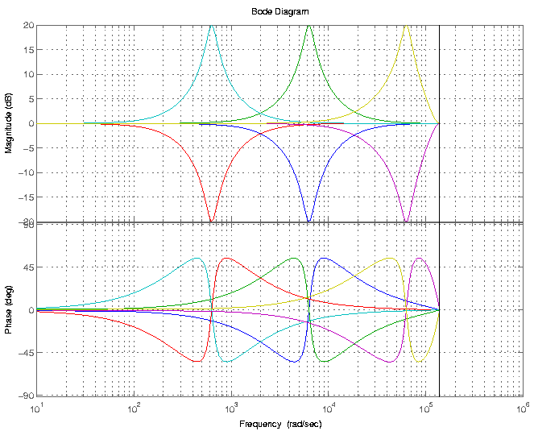

|
TAP-plugins Tom's Audio Processing plugins for audio engineering on the Linux platform |
|
[ TAP AutoPanner ] [ TAP Chorus/Flanger ] [ TAP DeEsser ] [ TAP Dynamics (Mono & Stereo) ] [ TAP Equalizer and TAP Equalizer/BW ] [ TAP Fractal Doubler ] [ TAP Pink/Fractal Noise ] [ TAP Pitch Shifter ] [ TAP Reflector ] [ TAP Reverberator ] [ TAP Rotary Speaker ] [ TAP Scaling Limiter ] [ TAP Sigmoid Booster ] [ TAP Stereo Echo ] [ TAP Tremolo ] [ TAP TubeWarmth ] [ TAP Vibrato ]
This plugin is an 8-band equalizer with adjustable band center frequencies. It allows you to make precise adjustments to the tonal coloration of your tracks. The design and code of this plugin is based on that of the DJ EQ plugin by Steve Harris, which can be downloaded (among lots of other useful plugins) from http://plugin.org.uk.
| Unique ID | 2141 [1] |
|---|---|
| I/O ports | 1 input / 1 output |
| CPU usage (44.1 kHz) | 4.0% max. (see Notes) |
| CPU usage (96 kHz) | 8.8% max. (see Notes) |
| Hard RT Capable | No |
| In-place operation | Supported |
| run_adding() function | Provided |
The TAP Equalizer is a powerful tool in the hands of a skilled mixing engineer. The main use of the band frequency controls is to allow to "tune in" various resonance frequencies of musical instruments, and by adjusting the gain of these frequencies, to alter the tone of an instrument in a desired way. For example, the sound of kick drums consists of two mainly distinct parts: the energy is mainly concentrated around 80-100 Hz (this is the "boom" part), but there is another component at around 2.5 kHz which gives the "edge" of the sound. By adjusting the level of these components, different tonal results can be achieved.
While listening to the track (soloed or not) with this plugin applied, raise the gain of the appropriate band (that is, the one with the closest default frequency) by an amount of about 6-12 dB and adjust the frequency control of the same band until you feel that you "got" that particular resonant tone of the instrument. Then play around with the gain settings to achieve the tonal balance you are going for.
Since you only pay (in terms of CPU usage) for the bands you actually use, it is recommended that you set the gains of unneeded bands to exactly 0 dB (you can do this in Ardour quickly by shift+clicking on the control fader) since processing of bands with 0 dB gain will be skipped. So don't leave a band gain at -0.12 dB unless you really need that -0.12 dB to be there.
| name | min. value | default value | max. value |
|---|---|---|---|
| Band 1 Freq [Hz] | 40 | 100 | 280 |
| Band 1 Gain [dB] | -50 | 0 | +20 |
| Band 1 Bandwidth [octaves] [2] | 0.1 | 1 | 5 |
| Band 2 Freq [Hz] | 100 | 200 | 500 |
| Band 2 Gain [dB] | -50 | 0 | +20 |
| Band 2 Bandwidth [octaves] [2] | 0.1 | 1 | 5 |
| Band 3 Freq [Hz] | 200 | 400 | 1000 |
| Band 3 Gain [dB] | -50 | 0 | +20 |
| Band 3 Bandwidth [octaves] [2] | 0.1 | 1 | 5 |
| Band 4 Freq [Hz] | 400 | 1000 | 2800 |
| Band 4 Gain [dB] | -50 | 0 | +20 |
| Band 4 Bandwidth [octaves] [2] | 0.1 | 1 | 5 |
| Band 5 Freq [Hz] | 1000 | 3000 | 5000 |
| Band 5 Gain [dB] | -50 | 0 | +20 |
| Band 5 Bandwidth [octaves] [2] | 0.1 | 1 | 5 |
| Band 6 Freq [Hz] | 3000 | 6000 | 9000 |
| Band 6 Gain [dB] | -50 | 0 | +20 |
| Band 6 Bandwidth [octaves] [2] | 0.1 | 1 | 5 |
| Band 7 Freq [Hz] | 6000 | 12000 | 18000 |
| Band 7 Gain [dB] | -50 | 0 | +20 |
| Band 7 Bandwidth [octaves] [2] | 0.1 | 1 | 5 |
| Band 8 Freq [Hz] | 10000 | 15000 | 20000 |
| Band 8 Gain [dB] | -50 | 0 | +20 |
| Band 8 Bandwidth [octaves] [2] | 0.1 | 1 | 5 |
This plugin consists of 8 Peaking EQ filters (which are IIR filters with an order of two). Filter coefficients are re-computed if and only if the user changed a control value since the last buffer run. Furthermore, those filters that are left at 0 dB gain are not processed at all. For this reason, the CPU demand of this plugin is a function of the control settings, hence it is not hard RT capable. However, the CPU demand is still somewhat predictable: moving all gains away from 0 dB will switch every filter on. The CPU usage measured in this state will not increase significantly when filter coefficients are re-computed in response to a changed control. Of course, if the user sets a gain back to 0 dB, that filter will be switched off, freeing CPU power. The CPU usage values displayed in the above table were measured with all filters working.
The bandwidth of the Peaking EQ filters is fixed to 1 octave in the TAP Equalizer implementation. However, because setting individual bandwidth values may be needed in certain cases, another implementation called TAP Equalizer/BW is also provided. Using that plugin, you can set the bandwidth of every filter between 0.1 and 5 octaves. The reason for keeping TAP Equalizer around as well is that you don't always need the ability to set bandwidth values, and TAP Equalizer/BW has a large amount of controls which may be disturbing in this case.
Below you can see a Bode diagram of the filter that makes up this plugin. The three frequencies are 100 Hz, 1 kHz and 10 kHz, with gain values of -20 and +20 dB and a sampling rate of 44.1 kHz. Bandwidth was set to 1 octave (which is the default). This plot is also available as an EPS file.
